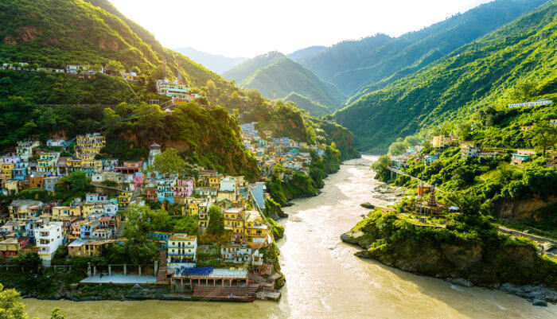

1. Uttarakhand,India
Uttarakhand formerly known as Uttaranchal is a state in the northern part of India. It is often referred to as the "Devabhumi" (literally "Land of the Gods") due to numerous Hindu temples and pilgrimage centres found throughout the state. Uttarakhand is known for the natural environment of the Himalayas, the Bhabar and the Terai. On 9 November 2000, Uttarakhand became the 27th state of the Republic of India, being carved from the Himalayan districts of Uttar Pradesh.It borders Tibet Autonomous Region of China to the north; the Sudurpashchim Pradesh of Nepal to the east; the Indian states of Uttar Pradesh to the south and Himachal Pradesh to the west and north-west. The state is divided into two divisions, Garhwal and Kumaon, with a total of 13 districts. The capital of Uttarakhand is Dehradun, the largest city of the state, which is a railhead. The High Court of the state is located in Nainital. Archaeological evidence supports the existence of humans in the region since prehistoric times. The region formed a part of the Uttarakuru Kingdom during the Vedic age of Ancient India. Among the first major dynasties of Kumaon were the Kunindas in the 2nd century BCE who practised an early form of Shaivism. Ashokan edicts at Kalsi show the early presence of Buddhism in this region. During the medieval period, the region was consolidated under the Kumaon Kingdom and Garhwal Kingdom. In 1816, most of modern Uttarakhand was ceded to the British as part of the Treaty of Sugauli. Although the erstwhile hill kingdoms of Garhwal and Kumaon were traditional rivals, the proximity of different neighbouring ethnic groups and the inseparable and complementary nature of their geography, economy, culture, language, and traditions created strong bonds between the two regions which further strengthened during the Uttarakhand movement for statehood in the 1990s. The natives of the state are generally called Uttarakhandi, or more specifically either Garhwali or Kumaoni by their region of origin. According to the 2011 Census of India, Uttarakhand has a population of 10,086,292, making it the 20th most populous state in India.
